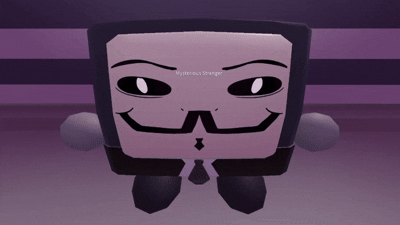
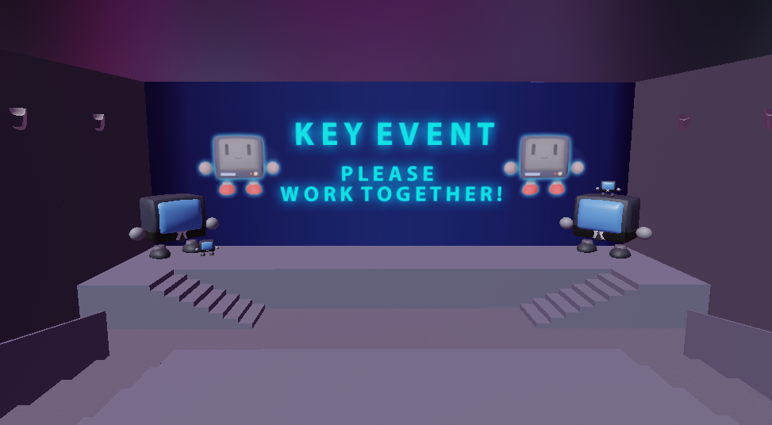

Roblox Cybersecurity Project Blog
Project Introduction
This Roblox game is a prototype developed by a team of SJSU students for the WITH Cyber CSU Initiative. We were tasked with creating an educational game for K-6 audiences with the goals of:
- Building safe internet habits
- Introducing possible online dangers
- Supporting a classroom learning environment
In order to test the effectiveness of using games as a supplement to classroom teaching. And so, we came up with Cyberguardians: The Quest for Safety! which is too long in my opinion, and I will refer to it by "Cyber Quest".


A mysterious stranger welcomes you to the digital world...
Cyber Quest takes place inside of a digital world, where the players will encounter different internet concepts turned into game puzzles. As they play and explore the world, we slowly introduce more and more fundamental safety concepts and how players can react accordingly.
A central design pillar of our game was the intention of use within classroom environments. A teacher or leading figure would be able to create closed, controlled server instances of the game for their group of students - allowing them to play an active role alongside their students. Our puzzles and game structure were built with this environment in mind, which we believed would help build positive habits such as asking a reputable figure for help. For example, in the later part of our game, we have our players navigating through a maze section where they learn about different safe internet practices in order to escape. Periodically, "key events" occur in which all players are gathered together in a room to discuss and answer a question together.

When a key event occurs, all players are gathered in a single area, and are given a more difficult question.
We give them extra time, and encourage them to discuss the correct answer with one another, guided by their teacher. Through this format, we hoped to reinforce positive skills like cooperation and discussion.
Dialogue / Cutscene System
The largest part of the game I created was a dialogue system that doubled as our cutscene system. It was a fun way to give the players a way to feel they were interacting with the world and its characters, as well as assisting in our expositions. This system included:
- Template for rapid scene creation
- Workspace tools for scene editing (ex: camera positioning using workspace camera)
- Support for external function calls mid-dialogue
- Cutscene basics such as camera movement and Animal Crossing-style charcter voices.
Here's an example of it in action:
Mysterious stranger talks to you...